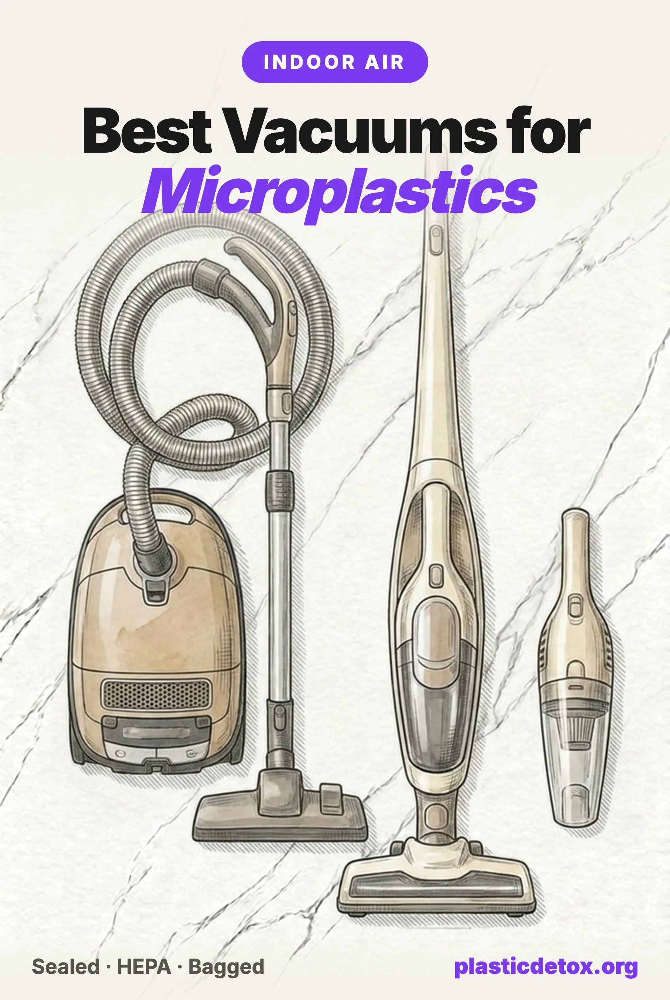

Best Vacuum Cleaners for Microplastics: Sealed HEPA or Nothing (2026)

The 30 Second Summary
- Your house dust is partly plastic. A 12 country study found PET microplastics in 100 percent of indoor dust samples, at a median of 5,900 micrograms per gram of dust. Toddlers swallow around 12 times the adult dose per kilogram of body weight, because they live on the floor and put their hands in their mouths.
- A leaky vacuum makes dust exposure worse, not better. When researchers tested 21 vacuums, particle emissions from the machines spanned five orders of magnitude, and having an exhaust filter did not explain the difference. Air that sneaks around the filter never gets cleaned. The seal is the spec that matters.
- Best overall: the Shark Navigator Lift-Away Professional NV356E. Sealed system with a HEPA filter, corroborated by independent particle counter testing, corded, and one of the most reviewed vacuums ever sold.
- Cleanest dust disposal: the Miele Guard L1 AllFloor, a bagged canister whose bags snap shut by themselves the moment you open the machine. Add the SF-HA 50 filter for certified HEPA 13.
- A Dyson is not automatically a HEPA vacuum. Whole-machine HEPA filtration is standard only on the Gen5detect. The V8, V10, V12 and the retail V15 Detect do not carry it.
- Carpet is the reservoir. Homes with carpet as the main floor covering held nearly double the petrochemical fibers of hard floor homes. Vacuum carpeted rooms twice a week, slowly, and empty bagless bins outdoors.
What Is Actually in Your House Dust
Most of the microplastic conversation happens around water and food. The research of the last five years says the floor deserves equal attention, because house dust is one of the most consistent microplastic exposures ever measured.
In 2020, researchers analyzing 286 dust samples from homes across 12 countries found PET based microplastics, the polymer of polyester clothing and carpet, in 100 percent of samples, at concentrations from 38 up to 120,000 micrograms per gram of dust, with a median of 5,900. At the median, roughly half a percent of the dust in those homes was a single plastic, before counting polypropylene, nylon and the rest.
Where does it come from? Mostly from things you can see from where you are sitting. Synthetic carpet, polyester clothing and upholstery, fleece blankets and curtains shed fibers constantly as they abrade. Air sampling in Paris apartments found indoor fiber concentrations roughly an order of magnitude higher than outdoor air. A Danish study using a breathing thermal manikin, a device that inhales like a person, estimated that an adult doing light activity indoors could inhale up to 272 microplastic particles in a day. And in 2022, researchers at the University of Hull found microplastics in the lung tissue of 11 of 13 living surgical patients, with polypropylene and PET leading the count.
The dose is not spread evenly across the household. A 2025 University of Birmingham study of UK homes estimated that toddlers ingest around 103 microplastic particles from dust per day against an adult's 56, which works out to about 12 times the adult dose per kilogram of body weight. Small children live at floor height, crawl through the settled layer, and put their hands in their mouths. If there is a baby in your house, the vacuum is not a cleaning appliance, it is exposure control. Our nursery guide covers the rest of that room.
Two findings turn this from a worry into a to do list. Homes with carpet as the main floor covering carried nearly double the petrochemical fibers of hard floor homes in an Australian study that sampled 32 houses for a month. And in follow up work across 108 homes in 29 countries, the same research group found that more frequent vacuuming was associated with lower microplastic loading in dust. The reservoir is real, and emptying it regularly measurably shrinks it.
The Leaky Vacuum Problem
Here is the uncomfortable part: the machine you use to remove that dust can be a dust emitter itself.
In the largest test of its kind, published in Environmental Science and Technology in 2012, researchers ran 21 vacuum cleaners spanning 11 brands, from under 100 dollars to around 800, and measured what came out of them. Ultrafine particle emissions ranged from 4 million to 110 billion particles per minute, a spread of five orders of magnitude between the cleanest and dirtiest machines. Fine particle mass emissions varied by a factor of more than 20,000. And the detail that matters for shoppers: the differences were largely not explained by the presence of an exhaust filter. Machines with filters still leaked, because the air was escaping around the filter, through housing seams and unsealed joints, without ever passing through it.
That is why this article keeps repeating one phrase. A sealed system means the whole machine is gasketed so that every bit of air the motor pulls in exits through the filter. The filter grade printed on the box describes the filter. The seal describes the machine. Only together do they describe what reaches your lungs.
The good news about fiber size
A true HEPA filter captures at least 99.97 percent of particles at 0.3 microns, which is the hardest particle size to catch; both larger and smaller particles are captured at higher rates. Indoor microplastics are overwhelmingly fibers, about 98 percent in a 2023 Australian indoor air study, and they run from roughly 20 microns to 5 millimeters. That is 60 to more than 10,000 times the filter's test size. For a sealed HEPA machine, capturing microplastic fiber is the easy part of its job. Every recommendation below is therefore really about the seal, the disposal path, and whether the HEPA claim covers the machine or just the filter.
There is also direct evidence that HEPA machines remove more of what matters. In a New Jersey field trial on contaminated carpets, HEPA vacuums cut lead dust loading by 55 percent against 36 percent for non HEPA machines. Lead dust is not plastic, but it lives in the same settled layer, travels the same way, and is captured by the same physics.
Every vacuum has a plastic body
We do not normally recommend plastic bodied appliances, and there is no getting around the fact that every vacuum on this page is mostly ABS plastic. We make the exception here deliberately: a vacuum never touches your food or your skin, no metal bodied alternative exists, and the machine's entire purpose is removing plastic dust from your home. Where build quality is equal we favor models with stainless steel wands and metal internals, and we say so on each pick.
Bagged vs Bagless: The Emptying Moment
While you are vacuuming, a sealed bagless machine and a sealed bagged machine perform the same. The difference arrives at the trash can.
Emptying a bagless bin means opening the dust container and knocking it against the rim until the compacted dust drops out. Some of what falls is the finest fraction the machine worked so hard to capture, and it puffs straight up into your breathing zone. We could not find a peer reviewed study that puts a number on the emptying cloud, and we looked, so treat this as mechanism rather than measurement. But the mechanism is visible with your own eyes in a sunbeam, and cleaning research consistently shows that disturbing settled fine dust resuspends it for long periods.
Bagged machines close the loop better, and the best implementation is Miele's: the AirClean 3D bags have a spring loaded collar that snaps shut automatically the moment you open the dust compartment, so the bag comes out already sealed. Sebo ships a manual cap with each bag that does the same job with one extra step. Kenmore's Type Q bags filter well but close with a plain collar, which is the main thing separating the budget bagged experience from the premium one.
If you own a bagless vacuum, none of this means replacing it. Empty it outdoors, hold the bin low over the garbage bag before releasing, and walk away for a minute while the cloud settles. Technique closes most of the gap.
The Dyson Question
The question we get most often about this category is some version of "is my Dyson enough?" The answer depends entirely on which Dyson, because whole-machine HEPA filtration is not standard across the range.
Whole-machine HEPA is Dyson's name for exactly the right thing: the entire vacuum is sealed and tested as a unit, with a claimed capture of 99.99 percent of particles down to 0.1 microns. It is standard on the Gen5detect, and on a V15 Detect Absolute HEPA variant that Dyson sells only through its own site. The V8, V10, V12, and the standard V15 Detect sold at retail use ordinary lifetime filters in a machine that does not carry the whole-machine claim. The suction is real, the laser dust illumination is genuinely useful, but a great motor in an unsealed housing is exactly the combination the 2012 emissions study warned about.
So: if you own a Gen5detect, you own a legitimately excellent microplastics vacuum, with the bagless emptying caveat above. If you own another cordless Dyson, it is still a capable cleaner, just not an air quality device, and it earns its keep best on hard floors where there is less fine dust to grind airborne. One safety note that applies to every cordless brand: buy replacement batteries only from the manufacturer. The CPSC has warned about aftermarket lithium packs for Dyson vacuums after multiple fires.
Our Picks
Every pick was checked the way we check everything: the filtration claim and what independently corroborates it, the disposal path, the brand's lawsuit and recall record, and owner reviews at scale. Review counts were current at publication.

Shark Navigator Lift-Away Professional NV356E
Anti-Allergen Complete Seal with a HEPA filter, tested to ASTM F1977. Corded upright, detachable lift-away canister, 2.2 quart cup. 4.4 stars, over 130,000 ratings. Empty the cup outdoors.
View →
Kenmore 600 Series Bagged Canister
Sealed AllergenSeal system, HEPA media exhaust filter, Type Q filtration bags rated 99.97 percent at 0.3 microns. PowerMate brush head, aluminum telescoping wand. 4.6 stars, about 12,900 ratings.
View →
Miele Guard L1 AllFloor
Sealed AirClean system with self sealing 3D bags that snap shut on removal. Stainless steel wand, 7 year motor warranty, quietest in the group. Takes the HEPA 13 filter below.
View →
Dyson Gen5detect
Whole machine HEPA filtration standard, 99.99 percent at 0.1 microns, with laser dust illumination. About 4.4 stars, 11,500 ratings. Bagless bin, so empty it outdoors.
View →Why the Shark leads
We let owner reviews break ties among products that pass our checks, and no vacuum here comes close to the NV356E's review base. But the reason it passes the checks in the first place is unusual for its price: Shark's Anti-Allergen Complete Seal is a sealed system claim tested to a published standard, and independent reviewers have corroborated it, with one measuring essentially clean exhaust air on a particle counter and finding gaskets at every joint. It is also corded, which sidesteps the lithium battery fire issue that has driven CPSC recalls and warnings across budget cordless vacuums. Its two honest weaknesses: the bagless cup means the emptying ritual matters, and it is plastic through and through.
The bagged upgrade path
If you want the dust to stay sealed from carpet to trash can, go bagged. The Kenmore 600 Series is the value play, with a sealed body and HEPA grade bags, and its known weak point is the wired hose, which is the usual repair on these machines. The Miele Guard L1 is the endgame: Miele discontinued the long running Complete C3 in 2025 and the Guard series is its successor, with the same sealed AirClean design, self sealing bags, a stainless wand, and a 7 year motor and casing warranty on a platform people routinely run for 15 or 20 years. The review base is still small because the line is new; the design lineage is the oldest in the category.
One thing Miele does not advertise loudly: the Guard ships with a standard AirClean exhaust filter, not the HEPA one. Add the SF-HA 50 HEPA AirClean filter, which is certified HEPA Class 13 under the European EN 1822 standard and seats against a rubber gasket so nothing bypasses it. It is a two minute swap and the machine is not complete for our purposes without it. Miele's entry level Classic C1 Pure Suction is also a fine sealed machine at a lower price, but note it takes a different filter, the SF-HA 30, which drifts in and out of stock.
Two more names for specific situations. The Sebo Airbelt K3 is the allergy purist's canister, built to the German S-Class standard that requires a leak free machine, and it carries the British Allergy Foundation's seal of approval. We link Sebo direct rather than to a marketplace listing because Sebo's warranty terms favor authorized dealers and explicitly exclude the extended warranty on Amazon purchases. And the Simplicity Allergy S20EZM remains our USA made bagged upright pick from the store: certified HEPA, fully sealed, and built to be repaired.
Side by side
| Vacuum | Sealed system | Dust disposal | Power | Best for |
|---|---|---|---|---|
| Shark NV356E | Yes, with HEPA filter included | Bagless cup, empty outdoors | Corded | Most homes, best value |
| Kenmore 600 Series | Yes, HEPA media exhaust | Bagged, plain collar | Corded | Bagged on a budget |
| Miele Guard L1 | Yes, add SF-HA 50 for HEPA 13 | Bagged, self sealing | Corded | Cleanest end to end path |
| Dyson Gen5detect | Yes, whole machine HEPA | Bagless bin, empty outdoors | Cordless | Daily quick passes |
| Sebo Airbelt K3 | Yes, S-Class certified | Bagged, manual cap | Corded | Allergy households, buy direct |
How to Vacuum for Microplastics
The machine is half the intervention. The other half is free.
- Weekly everywhere, twice weekly on carpet. The 29 country dust study associated more frequent vacuuming with lower microplastic loading, and carpet holds close to double the petrochemical fiber of hard floors. Slow passes matter more than extra passes: give the suction time to lift fiber out of the pile.
- Never dry sweep. An office cleaning study measured broom sweeping raising coarse airborne particles roughly 60 fold. On hard floors, vacuum first, then damp mop with a cotton head, not a microfiber pad, which is itself a synthetic fiber shedder. Damp cloths beat dry dusters on shelves for the same reason.
- Empty outdoors. Bagless bin or plain collared bag, do it outside, low over the trash bag, and step back for a minute.
- Shoes off, mat down. Around 60 percent of house dust originates outdoors, tracked in on shoes or drifting in through gaps. A doormat plus a shoes off rule cuts the inflow before it becomes vacuuming work. More free wins like this in our zero cost exposure guide.
- Run a HEPA air purifier for what the vacuum stirs up. Even careful vacuuming resuspends some fine dust for a while. A 2026 real world study found air cleaners measurably lowered indoor microplastic levels in occupied rooms. Our air purifier guide covers the models worth buying.
- Cut the source while you are at it. The fiber in your dust is mostly your own textiles. Washing synthetics in a Guppyfriend bag and slowly shifting bedding and high wear fabrics toward natural fiber shrinks what lands on the floor in the first place. Our clothing and laundry guide and bedroom air guide cover both ends.
Brands and Categories We Did Not Pick
Bissell cordless vacuums
Bissell recalled about 61,000 Multi Surface wet dry cordless vacuums in January 2023 after 66 reports of smoking and five battery fires, then about 142,000 Multi Reach cordless vacuums in February 2024 after six fires. Separately, more than 4.9 million Steam Shot steam cleaners have been recalled across 2024 and 2026 with over 160 burn injuries reported, and class actions are pending over the adequacy of the recall remedy. Bissell does sell corded models with a sealed HEPA claim, but we found no independent verification of the seal, and the recall record decides it for us.
Hoover, Eureka, and "HEPA media" marketing
Hoover sells "HEPA media" filters inside machines that make no sealed system claim, and owner reports describe visible dust leakage at the bag door. The company also paid a 750,000 dollar CPSC fine in 2007 for failing to report a vacuum fire hazard. Eureka's budget uprights similarly advertise cyclonic power without a sealed, certified system. When you see HEPA on a box, look for the words "sealed" or "complete seal" next to a testing standard. The filter material alone tells you almost nothing about what leaves the exhaust.
Dyson V8, V10, V12 and the retail V15
These are well made machines without whole-machine HEPA filtration, which Dyson reserves for the Gen5detect and a direct only V15 variant. If yours is on this list, use it for hard floors and quick passes, empty it outdoors, and do not treat it as an air quality tool. When it dies, replace it with a sealed machine.
Ultra cheap cordless sticks and aftermarket batteries
The CPSC has warned consumers to stop using INSE cordless stick vacuums sold on Amazon after more than 20 ignition reports, and separately warned about aftermarket lithium replacement batteries for Dyson vacuums after multiple fires. Rowenta and Brookstone cordless models have been recalled for the same hazard. Budget cordless is the wrong place to save money twice over: the filtration is unsealed and the battery is the fire risk. A 170 dollar corded sealed Shark beats a 120 dollar cordless anything.
Robot vacuums as your only vacuum
Most robot vacuums are not sealed systems, and their small bins and "HEPA type" filters are not the same thing as tested whole machine filtration. What they genuinely offer is frequency: a daily automated pass keeps the settled reservoir smaller between real cleanings. If you run one, prefer a model with a bagged self emptying base, which is the cleanest disposal path in the robot world, and keep a sealed HEPA machine for the weekly deep clean.
Frequently Asked Questions
What is the best vacuum cleaner for microplastics?
The Shark Navigator Lift-Away Professional NV356E is our best overall pick: it pairs a HEPA filter with Shark's Anti-Allergen Complete Seal, a sealed system claim that independent reviewers have corroborated with particle counters at the exhaust, and it has one of the largest review bases of any vacuum sold. For the cleanest dust disposal, the Miele Guard L1 AllFloor bagged canister uses self sealing bags that snap shut the moment you open the machine, with an optional certified HEPA 13 filter. The Kenmore 600 Series bagged canister is the best value bagged option, and the Dyson Gen5detect is the only Dyson sold on Amazon with whole machine HEPA filtration as standard.
Do HEPA vacuums really capture microplastics?
Yes, and the physics is on your side. A true HEPA filter captures at least 99.97 percent of particles at 0.3 microns, the hardest size to catch. Indoor microplastics are overwhelmingly fibers, about 98 percent in a 2023 Australian indoor air study, and those fibers run from roughly 20 microns up to 5 millimeters, which is 60 to over 10,000 times larger than the test size. Any intact HEPA filter stops them. The real question is whether the air actually goes through the filter. In a machine that is not sealed, dusty air leaks out through housing seams and gasket gaps without ever meeting the filter, which is why a sealed system matters more than the filter grade printed on the box.
Is a bagged or bagless vacuum better for microplastics?
While you are vacuuming, a sealed machine of either type performs the same. The difference is what happens when you empty it. Opening a bagless bin and banging it against the rim of a trash can puts a cloud of the finest captured dust right back into your breathing zone. A bagged machine with self sealing bags, like the Miele Guard series whose bags snap shut automatically when the lid opens, ends the job with the dust still locked inside. If you use a bagless vacuum, empty it outdoors, lower the bin close to the bag before releasing, and let the cloud settle away from you.
Is a Dyson a HEPA vacuum?
Usually not, and this surprises a lot of owners. Whole machine HEPA filtration, meaning the entire vacuum is sealed so all air exits through a HEPA filter, is standard on the Gen5detect, and on a V15 Detect Absolute HEPA variant sold only through Dyson directly. The V8, V10, V12 and the standard V15 Detect sold at retail use ordinary filters in a machine that does not carry the whole machine HEPA claim. Dyson's suction and dust illumination are real, but if you bought a Dyson for air quality reasons, check the specific model, not the brand.
Can vacuuming make dust exposure worse?
Yes. A 2012 study in Environmental Science and Technology tested 21 vacuum cleaners and found their ultrafine particle emissions spanned five orders of magnitude, from 4 million to 110 billion particles per minute, and the differences were not explained by the presence of an exhaust filter. A leaky machine takes settled dust, grinds it through a motor, and redistributes the finest fraction into the air you breathe. Dry sweeping is worse still: an office cleaning study measured broom sweeping raising coarse airborne particles by roughly 60 times. The fix is a sealed machine, slow passes, and damp mopping on hard floors instead of sweeping.
How often should I vacuum to reduce microplastics?
At least weekly, and twice weekly for carpeted or high traffic rooms. In studies of homes across 29 countries, researchers found that more frequent vacuuming was associated with lower microplastic loading in house dust, and that carpeted homes carried nearly double the petrochemical fibers of hard floor homes. Move slowly so the suction has time to lift particles out of the pile, empty bagless bins outdoors, and pair vacuuming with damp mopping and a shoes off rule, since around 60 percent of house dust originates outdoors.
Related Articles
- Microplastics in Indoor Air
Where airborne plastic comes from room by room, and the full cleaning strategy. - Best Air Purifiers for Microplastics
The vacuum handles the floor, the purifier handles the air. The models worth buying. - Microplastics in Bedroom Air
Why the room you sleep in has the most synthetic fiber, and what to change first. - Microplastics in Clothing and Laundry
The fiber in your dust starts in your closet. Filters and habits that cut shedding. - Free Ways to Reduce Plastic Exposure
Shoes off, damp dusting, ventilation, and the other zero dollar wins. - Can You Detox Microplastics?
What the body clears on its own, and which exposure cuts actually matter.